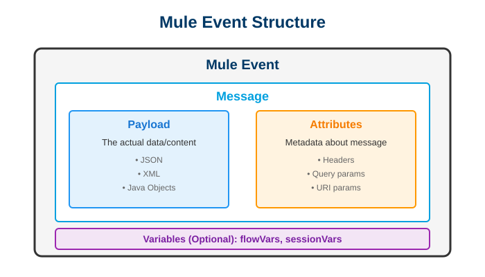

Day 5: Understanding Mule Events & Messages
📚 Learning Objectives
- Understand the complete Mule Event structure
- Master payload vs attributes concepts
- Learn about variables (flow variables)
- Explore message metadata
- Practice manipulating events
Estimated Time: 2.5 hours
Theory: 40% | Practical: 60%
🎯 Mule Event Structure

Complete Mule Event Structure
A Mule Event is the data structure that moves through a Mule flow. It consists of two main parts:
- Message: Contains the payload (data) and attributes (metadata)
- Variables: Optional data storage that persists through the flow
📦 Understanding Payload
What is Payload?
The payload is the main body of the message - the actual data being processed.
Payload Examples:
String Payload:
"Hello, World!"
JSON Payload:
{
"customerId": 12345,
"name": "John Doe",
"email": "john@example.com"
}
XML Payload:
<customer>
<id>12345</id>
<name>John Doe</name>
</customer>
Accessing Payload:
DataWeave Expression: #[payload]
Components: Logger, Set Payload, Transform Message
Accessing HTTP Attributes:
| Attribute | DataWeave Expression |
|---|---|
| All headers | attributes.headers |
| All query params | attributes.queryParams |
| Specific query param | attributes.queryParams.page |
| URI parameter | attributes.uriParams.id |
| HTTP method | attributes.method |
| Request path | attributes.requestPath |
🛠️ Hands-On Exercise: Event Manipulation
Create New Project: event-demo
Exercise 1: Inspect Payload and Attributes
<flow name="inspect-event-flow">
<http:listener
config-ref="HTTP_Listener_config"
path="/inspect/{userId}"/>
<logger
level="INFO"
message="Payload: #[payload]"/>
<logger
level="INFO"
message="URI Param userId: #[attributes.uriParams.userId]"/>
<logger
level="INFO"
message="Query Param (if exists): #[attributes.queryParams.filter default 'none']"/>
<logger
level="INFO"
message="HTTP Method: #[attributes.method]"/>
<logger
level="INFO"
message="All Headers: #[attributes.headers]"/>
<set-payload
value="#[
{
userId: attributes.uriParams.userId,
method: attributes.method,
path: attributes.requestPath
}
]"/>
</flow>
Test:
POST http://localhost:8081/inspect/12345?filter=active
Body: {"action": "test"}
Check Console for logs!
Exercise 3: Modify Payload Without Losing Original
<flow name="preserve-original-flow">
<http:listener
config-ref="HTTP_Listener_config"
path="/transform"/>
<!-- Save original payload in variable -->
<set-variable
variableName="originalPayload"
value="#[payload]"/>
<logger message="Original: #[payload]"/>
<!-- Transform payload -->
<set-payload value="#[upper(payload)]"/>
<logger message="Transformed: #[payload]"/>
<!-- Create response with both -->
<set-payload value="#[
{
'original': vars.originalPayload,
'transformed': payload
}
]"/>
</flow>
Test:
POST http://localhost:8081/transform
Body: hello world
Response:
{
"original": "hello world",
"transformed": "HELLO WORLD"
}
🧪 Practice Challenges
Challenge 1: Request Logger
Create an endpoint that logs ALL details of a request:
- Method
- Path
- All headers
- All query params
- Body (payload)
Challenge 2: Shopping Cart Calculator
Create POST /cart that accepts:
{
"items": [
{"name": "Item1", "price": 10, "qty": 2},
{"name": "Item2", "price": 15, "qty": 1}
]
}
Calculate and return:
- Subtotal
- Tax (8%)
- Total
- Number of items
Use variables to store intermediate calculations.
Challenge 3: Multi-Step Process
Create a flow that:
- Receives user ID in path
- Stores user ID in variable
- Changes payload to simulate DB lookup
- Stores result in another variable
- Builds final response using BOTH variables
- ✅ Understand Mule Event structure
- ✅ Know difference between payload and attributes
- ✅ Can create and use variables
- ✅ Access HTTP metadata
- ✅ Build complex flows using all event components